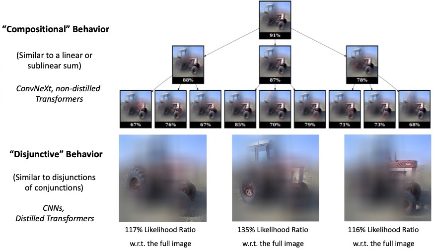
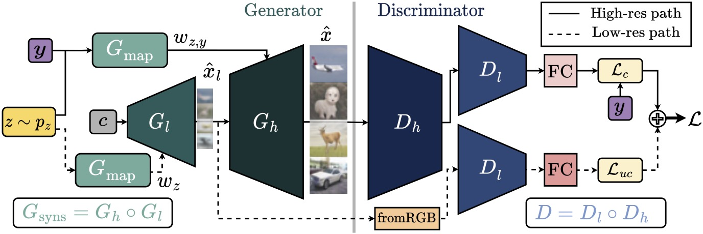
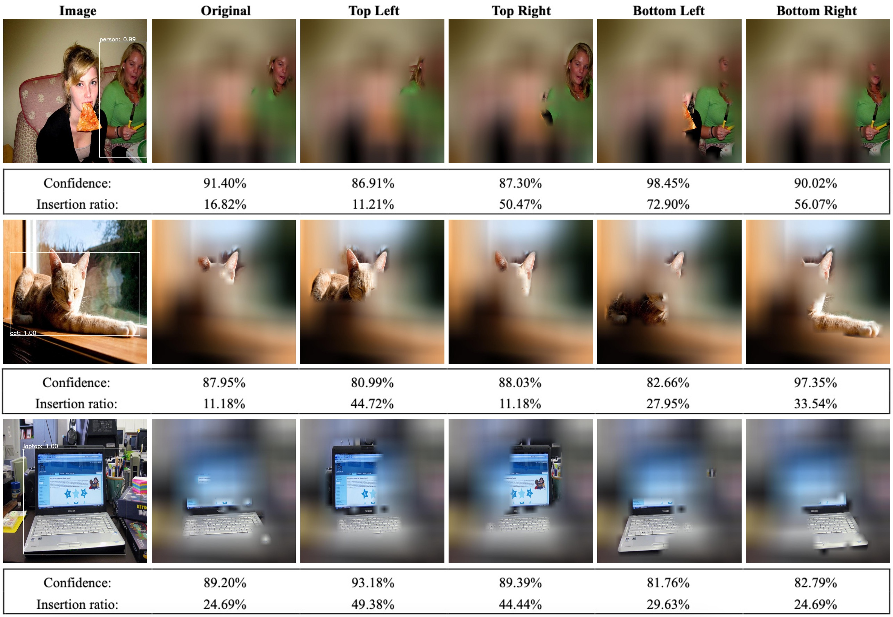

News
[06/2024] I will attend CVPR 2024 in Seattle to give an oral presentation.
[05/2024] Our paper “Comparing the Decision-Making Mechanisms of Transformers and CNNs via Explanation Methods” was nominated as a candidate for the CVPR 2024 Best Paper Award.
[03/2024] Accepted a Ph.D. offer at Oregon State University. Thank you to Prof. Fuxin Li for his strong support all along.
[02/2024] Two papers accepted to CVPR 2024.
|
Research
My research interests lie in robotics, computer vision, and machine learning. I am particularly focused on Explainable AI, Intuitive Physics, 3D construction, and SLAM. Representative papers are highlighted.
I am happy to collaborate and answer questions about my research, feel free to send me an email.
|
|

|
Comparing the Decision-Making Mechanisms by Transformers and CNNs via Explanation Methods
Mingqi Jiang,
Saeed Khorram,
Li Fuxin
CVPR, 2024 (Oral Presentation, Best Paper Award Finalist)
project page
/
video
/
arXiv
We find that different types of visual recognition models exhibit quite different behaviors along the concept axes of disjunctivism and compositionality. The choice of normalization strongly affects the compositionality of the model.
|
|

|
Taming the Tail in Class-Conditional GANs: Knowledge Sharing via Unconditional Training at Lower Resolutions
Saeed Khorram,
Mingqi Jiang,
Mohamad Shahbazi,
Mohamad H. Danesh,
Li Fuxin
CVPR, 2024
arXiv
/
code
UTLO, a novel knowledge-sharing framework tailored for training cGANs in the long-tailed setup.
|
|

|
Diverse Explanations for Object Detectors with Nesterov-Accelerated iGOS++
Mingqi Jiang,
Saeed Khorram,
Li Fuxin
BMVC, 2023
paper
NAG-iGOS++, an algorithm that extends the iGOS++ algorithm to explain object detection networks, generating multiple explanations for a single detection.
|
Misc
I enjoy playing badminton and competing in various tournaments in my spare time. If you're good at it and are in or near Oregon, please feel free to contact me and join in.
|
|